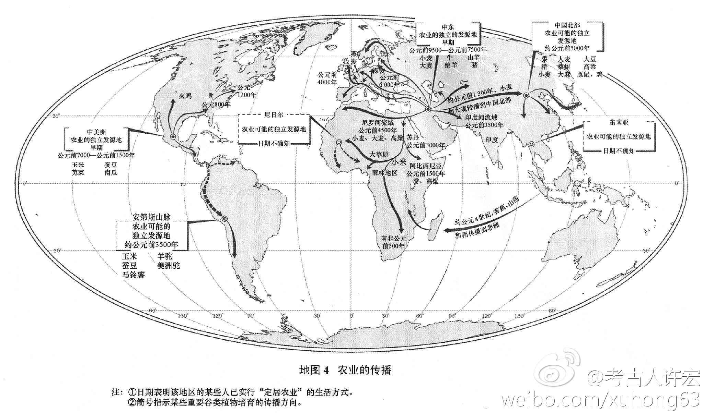

想想这件事情：从周一到周日七天，你会使用几个移动应用，又会使用几个电脑软件？平板不能完全取代笔记本不是因为笔记本有平板没有的功能，更通用的平台或者计算能力，而是因为在完全专注的情况下，笔记本可以有更高的工作效率。原因仅仅是用户接口的区别——键盘、鼠标以及更大的屏幕。
//@考古人许宏: 回复@军师巷:有道理在本朝学界，多年来中国青铜文明本土起源说占主流地位，认为在欧亚大陆西部进入青铜时代至少一千多年后，我们又自主创新出具有中国特色的青铜文明。现在我们该咀嚼回味一下了 //@军师巷:从现实的经验看，原创是极小概率的事件，而模仿则简单多了，传播论也许更@考古人许宏:#宏观早期中国#定居与农业潮在距今1万年前后涌动于各大陆。小麦文明、小米和大米文明与玉米文明分别占据欧亚非大陆的西、东部和美洲大陆。图中的年代数据不断被改写。它们是独立起源还是单中心起源？莫衷一是。随后更为汹涌的青铜潮，则肇始于距今5500年前后的旧大陆西部。东亚青铜文明也是它的余波？ 

 网页链接
网页链接